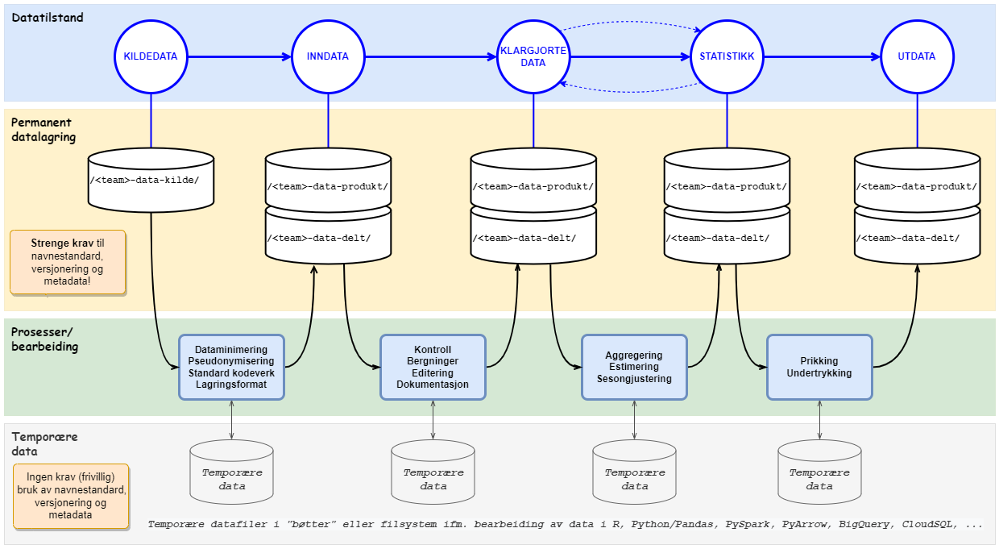

Navnestandard datalagring
I SSB er det et krav at datasett i datatilstandene1 (inndata), klargjorte data, statistikk og utdata dokumenteres. Det er spesielt viktig at klargjorte data, som er grunnlag både for statistikk, arkiv og datadeling, dokumenteres godt. Dokumentasjon er nødvendig for at vi skal finne, forstå og (gjen)bruke SSBs data. De fysiske datasettene og variablene som inngår i disse skal dokumenteres med bruk av metadataløsningene DataDoc (datasettdokumentasjon), VarDef 2 (variabeldefinisjoner) og KLASS (kodelister og klassifikasjoner).
Se også detaljerte krav til datasett-metadata i dokumentene DataDoc - Krav til dokumentasjon av datasett og for variablene som inngår i datasettet DataDoc - Variabelforekomst
En viktig del av datadokumentasjonsarbeidet er hvordan datasett versjoneres og organiseres i en standardisert mappestruktur (katalogstruktur). Dette dokumentet beskriver en navnestandard for mappestruktur og datasett (datafilene), i tillegg til regler for versjonering av datasett (datafilene).
1 Datatilstanden “kildedata” omfattes ikke av denne navnestandarden i og med at kildedata mottas av SSB i mange former/strukturer, og at kildedata i liten grad skal deles internt og eksternt (begrenset tilgang). Det må eventuelt vurderes om det skal utarbeides egne retningslinjer for lagring av kildedata. Datatilstanden “inndata” er nevnt i parentes i og med at denne datatilstanden ikke er obligatorisk.
2 Utvikling av nye VarDef er i skrivende stund ikke påbegynt. SSBs eksisterende variabeldefinisjonsløsning Vardok skal derfor benyttes fram til ny løsning er klar.
Dokumentet “Standardformater for datalagring i SSB” beskriver krav til filformater og dataformater ved lagring av klargjorte data som skal benyttes til utarbeiding av statistikk, datadeling og arkivering.
Navngiving av mapper og datasett (filer)
Navnestandarden3 baseres på kapitelet “Bøtter” i Dapla- manualen, interndokumentet Datatilstander i SSB og “statistikk kortnavn” i Statistikkregisteret.
3 Navnestandarden er foreløpig begrenset til lagring av datafiler i Google Cloud Storage Buckets - ofte kalt “bøtte(r)” i SSB. Navnestandard for bruk av andre typer datalagringsteknologier i Google Cloud, f.eks. BigQuery og CloudSQL, dekkes ikke av denne navnestandarden!
Mapper (kataloger)
Standard lagringsområder (bøtter) som opprettes for alle statistikkprodukt-team i SSB
Følgende lagringsområder (bøtter) operettes for alle team:
- ssb-prod-<teamnavn>-data-kilde : Inneholder ubehandlede rådata fra datakildene.
- ssb-prod-<teamnavn>-data-produkt : Inneholder data knyttet til statistikkproduktet.
- ssb-prod-<teamnavn>-data-delt : Inneholder data knyttet til statistikkproduktet som kan deles med andre statistikkteam.
Denne navnestandarden gjelder primært for lagringsområdene data-produkt og data-delt, men er også anbefalt brukt for data-kilde*.
Datatilstander, prosesser, permanente data og temporære data
I en statistikkproduksjon skal det for hver datatilstand lagres permanente datasett (datafiler). Disse datasettene skal følge denne navnestandarden inkludert kravet til versjonering og dokumentasjon (metadata). Det er imidlertid viktig å skille mellom behovet for permanente data og temporære data. I prosessene som kjøres mellom hver datatilstand, f.eks. klargjøringsprosessene mellom inndata og klargjorte data, vil det være behov for temporær datalagring. Temporære data skal aldri deles, og det stilles derfor ingen krav til verken navnestandard, versjonering eller dokumentasjon (metadata) av disse. Det er helt opp til hvert produkt-team hvordan de vil organisere temporære data. Ved å skille mellom permanent datalagring og temporære datalagring oppnår vi en optimal løsning både for dataprodusenter (statistikkseksjonene) og data-konsumentene (interne og eksterne brukere). Produsentene får nødvendig fleksibilitet til å prosessere data i temporære områder, mens konsumentene får godt dokumenterte og versjonerte data i en standardisert mappe-struktur og tilgjengelig for gjenfinning i en søkbar datakatalog.

Statistikkprodukter og dataprodukter
Statistikkprodukter
Alle SSBs tidligere og nåværende statistikkprodukter inngår Statistikkregisteret. Før publisering på ssb.no må alle statistikkprodukter være registrert i Statistikkregisteret med informasjon om bl.a. statistikkens navn, emne-område, eierseksjon og publiseringstidspunkt. I tillegg får statistikkene tildelt et kortnavn. Eksempler på statistikk-kortnavn er:
"kpi"for konsumprisindeksen"reise"for reiseundersøkelsen"ftot"for næringslivstjenester, omsetning etter tjenestetype
Kortnavnene er unike og stabilt over tid (uforanderlige). De er derfor valgt som grunnlag for kategorisering/inndeling av datasett i Dapla, dvs. benyttes som grunnlag for navn på mappene i lagringsområdene (bøttene).
Statistikkregisteret har også et API for å hente informasjon om alle SSBs statistikker i json- format.
Dataprodukter
Det er imidlertid ikke slik at alle data i SSB kan knyttes direkte til en statistikk i Statistikkregisteret. Flere statistikkseksjoner i SSB bearbeider også data til andre bruksområder og formål, eksempelvis klargjøring av data til forskning og utlån, bearbeiding av data som skal inngå som en del av andre statistikker, og data som inngår i populasjonsregistre. Denne typen data omtales i dette dokumentet som “dataprodukter”, og i navnestandarden skiller vi mellom “dataprodukter” og “statistikkprodukter”. Det eksisterer ikke et register med “kortnavn” for data-produktene i SSB, men hvert team må lage kortnavn også for dataproduktene. Eksempler på dataprodukt-kortnavn er “nudb” (utdanningsdatabasen) og “fd_trygd” (forløpsdatabasen for trygdedata).
For å skille mellom dataprodukter og statistikkprodukter skal navnet på alle mapper som representerer dataprodukter ha endelsen “_data”, f.eks. “nudb_data” og “fd_trygd_data”.
Mappestruktur for organisering av datasett i Dapla-teamenes lagringsområder (bøtter)
Med utgangspunkt i standard bøtter som opprettes for alle statistikk-team i DAPLA, Statistikkregisteret og datatilstander, er det utarbeidet følgende regler for mappestrukturen og navngiving av mappene i bøttene (gjelder for data-produkt-bøtte og data-delt-bøtte, men anbefalt også for data-kilde- bøtte) :
ssb-prod-<team-name>-data-produkt/
└─ <statistikk-kortnavn> | <dataprodukt>_data/
└── <datatilstand>/
├── [datasett-1]
├── [datasett-2]
└── [datasett-NN]- Første nivå er lagringsområdet (bøtte)
- Andre nivå er:
-> enten kortnavn fra Statistikkregisteret
-> eller et dataprodukt-navn (“kortnavn”) - Tredje nivå er datatilstand
- Fjerde nivå er datasett (datafiler)
Støtte for “egendefinerte under-mapper” ved behov for organisering av datasett i flere nivåer
Ved behov er det tillatt å utvide mappestrukturen med med flere egendefinerte nivåer (nivå 4, 5, 6, .., N). Dette kan være nyttig for team som har veldig mange datasett og har behov for å gruppere disse i flere undermapper:
ssb-prod-<team-name>-data-produkt/
└─ <statistikk-kortnavn> | <dataprodukt>_data/
└── <datatilstand>/
└── <egen under-mappe>/
└── <egen under-under-mappe>/
└── <.. osv.>/
├── [datasett-1]
├── [datasett-2]
└── [datasett-NN]- Første nivå er lagringsområdet (bøtte)
- Andre nivå er:
-> enten kortnavn fra Statistikkregisteret
-> eller et dataprodukt-navn (“kortnavn”) - Tredje nivå er datatilstand
- Fjerde nivå er datasett (datafiler)
- Nivå 4, 5, osv. er egendefinerte under-mapper
- Nederste nivå er datasett (datafiler)
Støtte for temporære data (temp-mappe) og oppdragsdata (oppdrag-mappe)
Ved behov for lagring av temporære data (tilsvarende wk-katalogene på Linux på bakken) er det støtte for å opprette en temp -mappe. Temporære data er kun tillatt i data-produkt-bøtten, bør fjernes etter en viss tid, og skal ikke deles med andre (kun tilgjengelige innenfor eget team).
Det er også anbefalt å opprette en oppdrag -mappe for team som jobber med oppdragsvirksomhet. Egne regler gjelder for behandling og oppbevaring av oppdragsdata. Det er derfor ønskelig at disse organiseres i en egen mappe. Utover dette er det anbefalt å ha med WebSak-saksnummer til oppdraget enten som en undermappe eller som en del av datasett-navnet.
ssb-prod-<team-name>-data-produkt/
└─ <statistikk-kortnavn> | <dataprodukt>_data/
└── <datatilstand>/
└── <datatilstand>/
├── [datasett-1]
├── [datasett-2]
└── [datasett-NN]
└─ temp/
├── [temp-datasett-A]
└── [temp-datasett-X]
└─ oppdrag/
└── <WebSak-saksnummer>/
├── [oppdrag-datasett-Y]
└── [oppdrag-datasett-Z]- Første nivå er lagringsområdet (bøtte)
- Andre nivå er:
-> enten kortnavn fra Statistikkregisteret
-> eller et dataprodukt-navn (“kortnavn”) - Tredje nivå er datatilstand
- Fjerde nivå er datasett (datafiler)
Her vises også:
- temp-mappe for temporære data
- oppdrag-mappe for oppdragsdata
Eksempel på mappestruktur i data-produkt-bøtte
Eksempel “Team overnaturlig”
Nedenfor vises et eksempel på hvordan et tenkt team “ Team overnaturlig ” kan organisere sine tenkte statistikkprodukter “ufo” og “superhelt” i en mappestruktur:
ssb-prod-team-overnaturlig-data-produkt/
└── ufo/
├── inndata/
├── klargjorte-data/
├── statistikk/
└── utdata/
└── superhelt/
├── inndata/
├── klargjorte-data/
├── statistikk/
└── utdata/
└── temp/
└── oppdrag/ Eksempel “Team reiseliv” - Seksjon for næringslivets konjunkturer (S422)
Teamet har ansvar for 3 statistikk-produkter (kortnavn “overnatting”, “reise” og “grensehandel”)
- Ett ALTINN-skjema og 2 utvalgsinnsamlinger med intervjuer på telefon/CATI
- Produksjonsløpet har fokus på statistikkprodukter fra kildedata til utdata
ssb-prod-reiseliv-data-produkt/
└── overnatting/
├── inndata/
├── klargjorte-data/
├── statistikk/
└── utdata/
└── reise/
├── inndata/
├── klargjorte-data/
├── statistikk/
└── utdata/
└── grensehandel/
├── inndata/
├── klargjorte-data/
├── statistikk/
└── utdata/
└── temp/Eksempel “Team trygd” - Seksjon for inntekts- og levekårsstatistikk (S350)
Teamet har datainnsamling fra flere av NAV sine register
- Data klargjøres og brukes til flere formål, bl.a. utlån av data til forskere (FD-Trygd) og levering til microdata.no (S380)
Team trygd klargjør dataprodukter, ikke statistikkprodukter. Alle dataprodukt-kortnavn har derfor endelsen “_data” i eksempel-mappestrukturen nedenfor.
ssb-prod-trygd-data-produkt/
└── barnetrygd_data/
├── inndata/
├── klargjorte-data/
├── statistikk/
└── utdata/
└── foedsykp_data/
├── inndata/
├── klargjorte-data/
├── statistikk/
└── utdata/
└── pensj_data/
├── inndata/
├── klargjorte-data/
├── statistikk/
└── utdata/
└──` … osv.
└── temp/
└── oppdrag/Filnavn for datasett
Filnavnet til datasettet skal bygges opp av følgende elementer:
| Element | Forklaring | |
|---|---|---|
| 1 | Kort beskrivelse | Kort tekst som forklarer datasettets innhold, f.eks. “varehandel, “personinntekt”, “grensehandel_imputert“ eller “framskrevne-befolkningsendringer“ |
| 2 | Periode - inneholder data f.o.m. dato | Datasettet inneholder data fra og med dato/tidspunkt. I filnavnet må perioden prefikses med “_p”, eksempel “_p2022” eller “_p2022-01-01”. “_p” er en forkortelse for “periode”. Se også gyldige formater for periode (dato/tidspunkt) |
| 3 | Periode - inneholder data t.o.m. dato | Datasettet inneholder data til og med dato/tidspunkt. Denne brukes ved behov, eksempelvis for datasett som inneholder forløpsdata eller datasett med flere perioder/årganger. |
| 4 | Versjon | Versjon av datasettet. I filnavnet må versjonsnummeret prefikses med “_v, eksempel “v1”, “v2” eller “v3”. Se også eget kapittel om regler for versjonering av datasett. |
| 5 | Filtype | Filendelse som sier noen om filtypen, f.eks. “.json”, “.csv”, “.xml” eller “.parquet”. |
Format for filnavn (datasettnavn)
Filnavnet skal bygges opp på følgende måte:
<kort-beskrivelse>_p<periode-fra-og-med>_p<perode-til-og- med>_v<versjon>.<filtype>
Noen eksempler på gyldige filnavn :
flygende_objekter_p2019_v1.parquet (inneholder en årgang med data)
ufo_observasjoner_p2019_p2020_v1.parquet (inneholder 2 årganger med data)
framskrevne-befolkningsendringer_p2019_p2050_v1.parquet (inneholder data fra 2019 til 2050)
sykepenger_p2022-01-01_p2022-12-31_v1.parquet (inneholder data fra 01.01.2022 til 31.12.2022)
utanningsnivaa_p2022-10-01_v1.parquet (inneholder tverrsnittsdata (status) per 01.10.2022)
grensehandel_imputert_p2022-10_p2022-12_v1.parquet (inneholder data for okt., nov. og des. 2022)
omsetning_p2020W15_v1.parquet (inneholder data for uke-nummer 15 (week))
skipsanloep_p2022B1_v1.parquet (inneholder data for første 2 måneders-periode i 2022 (bimester))
pensjon_p2018Q1_v1.parquet (inneholder data for første kvartal (3-måneders-periode) i 2018 (quarter))
nybilreg_p2022T1_v1.parquet (inneholder data for første tertial (4 måneders-periode) i 2022)
personinntekt_p2022H1_v1.parquet (inneholder data for første halvår (6-måneders-periode) i 2022)
varehandel_p2018Q1_p2018Q4_v1.parquet (inneholder data for kvartalene 1, 2,3 og 4 i 2018)
Eksempel på datasett-filer i en mappestruktur
Nedenfor vises et eksempel på hvordan “ Team overnaturlig ” har organisert sine datasett-filer i en mappe-struktur for sin “ ufo-statistikk ”:
ssb-prod-team-overnaturlig-data-produkt/
└── ufo/
└── inndata/
├── lysfenomen_p2019_v1.parquet
├── lysfenomen_p2020_v1.parquet
├── flygende_objekter_p2019_v1.parquet
└── flygende_objekter_p2020_v1.parquet
└── klargjorte-data/
├── ufo_observasjoner_samlet_p2019_v1.parquet
└── ufo_observasjoner_samlet_p2020_v1.parquet
└── statistikk/
└── ufo_statistikk_p2019_p2020_v1.parquet
└── utdata/
├── ufo_statistikk_fylke_p2019_p2020_v1.csv
└── ufo_statistikk_landet_p2019_p2020_v1.csv
└── … osv.Tillatte tegn for bruk i filnavn og mappe-navn
Det er kun tillatt å bruke alfanumerisk tegn begrenset til:
- a-z og A-Z
- 0-9
- - (bindestrek)
- _ (understrek)
Ikke bruk bokstavene “æ”, “ø” og “å” i filnavn eller i mappe-navn.
Anbefalingen er at disse erstattes med “ae”, “oe” og “aa”.
- Eksempel: “naering”, “oekonomi” og “levekaar”
Mellomrom/ordskiller (space) erstattes med bindestrek (“-”) eller understrek (“_”).
- Eksempel: “skatt_for_personer” og “vann-og-avloep”
Punktum (“.”) er kun tillatt brukt for å skille filnavnet fra filendelsen (filtypen).
- Eksempel: “persondata.parquet” og “persondata.csv”
Ingen andre spesialtegn er tillatt brukt i filnavn eller mappe-navn.
“Datapartisjonering” - alternativ organisering av datasett med flere mapper og filer
Datatjenester/program-bibliotek som PySpark, PyArrow, Pandas og Dask har funksjonalitet for datapartisjonering. Dette er en teknikk som benyttes for å splitte opp veldig store datasett til flere små datasett og deretter plassere disse filene i en mappe-struktur. En av fordelene med dette er at konsumenter (brukere) kan jobbe med mindre deler av store datasett. En vanlig praksis er å dele opp (partisjonere) et stort datasett med mange årganger/perioder i flere små årgangsfiler. Da vil navnet på root-mappen tilsvare navnet på filen (hvis vi kun hadde én stor fil) , og underkatalogene vil være periodeinndeling, f.eks. “/aargang2019” og “/aargang2020”. Det er også mulig å “partisjonere” data på andre måter for å støtte parallell-prosessering av store datasett i f.eks. Spark.
Eksempel på partisjonering av stort datasett
“Team overnaturlig” har et stort datasett med mange årganger med observasjoner av “flygende objekter”.
ssb-prod-team-overnaturlig-data-produkt/
└── ufo/
└── inndata/
└── flygende_objekter_p1980_p2020_v1.parquetTeamet ønsker nå å “partisjonere” denne store datafilen i flere små årgangsfiler (med filtype parquet).
Det finnes flere bibliotek og verktøy som støtter partisjonering av store datafiler, eksempelvis Pandas hvor det er mulig å partisjonere en dataframe på følgende måte når den skrives til en parquet-fil(er):
df.to_parquet('./flygende_objekter_p1980_p2020_v1', partition_cols=['aar'])
Se mer informasjon om datapartisjonering med Pandas: https://pandas.pydata.org/docs/reference/api/pandas.DataFrame.to_parquet.html?highlight=example
Nedenfor vises et eksempel på hvordan en mappestruktur med datasett-filer kan se ut etter utført data-partisjonering.
ssb-prod-team-overnaturlig-data-produkt/
└── ufo/
└── inndata/
└── flygende_objekter_p1980_p2020_v1/
└── aar=1980/
└── data.parquet
└── aar=1981/
└── data.parquet
└── aar=1982/
└── data.parquet
… osv.
└── aar=2020/
└── data.parquet